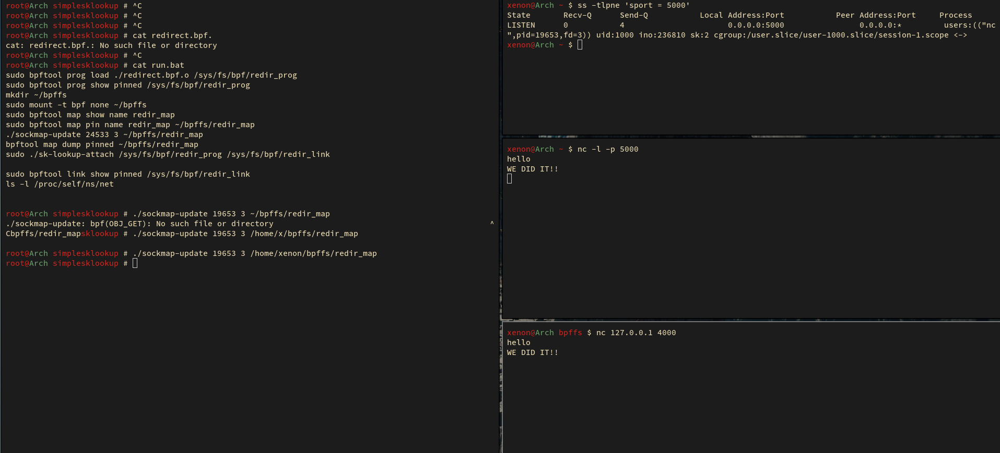
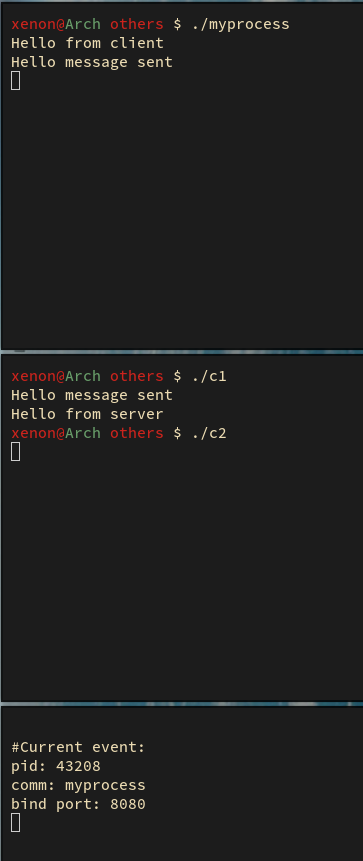
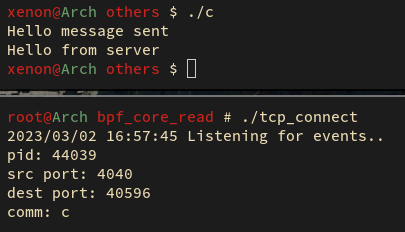
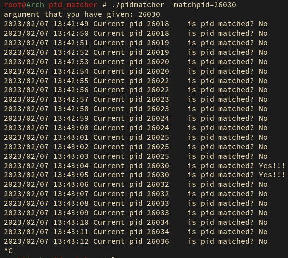
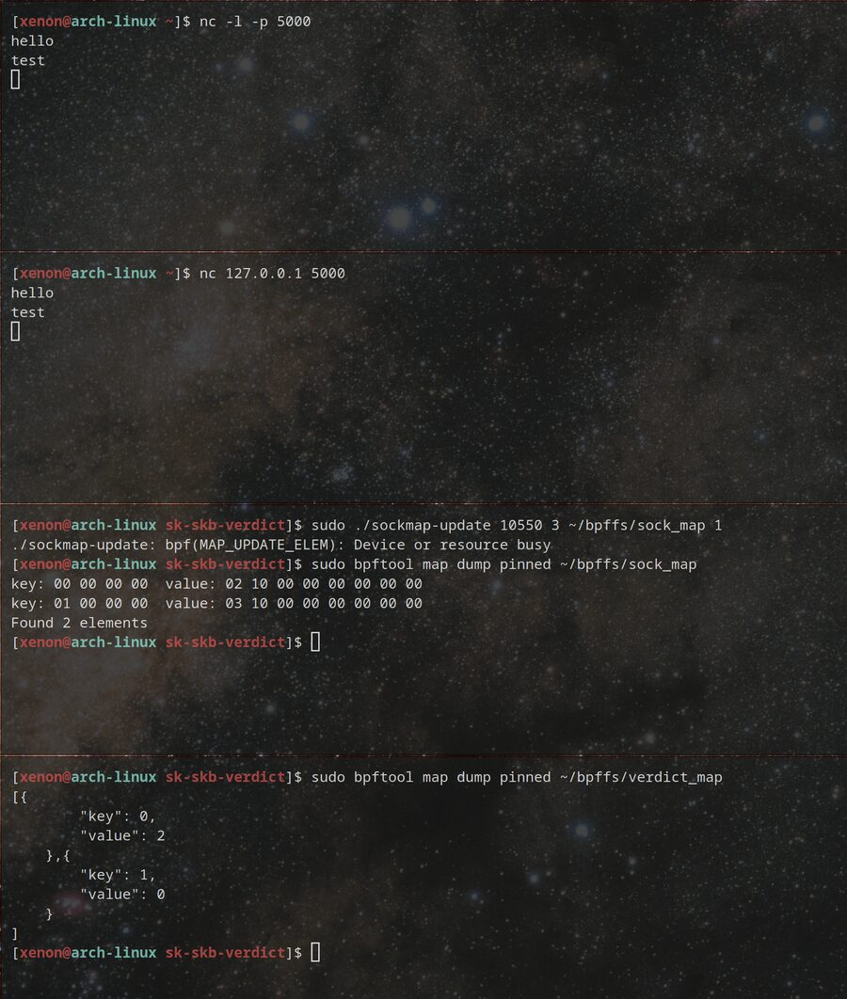

projects/ebpf_tools/
03 · ebpf_tools · hive cli
eBPF Tools · hive
hive is a CLI consisting of networking tools which can be used to trace/redirect network traffic. In its own words: "We run a bunch of commands to trace or manipulate stuff using ebpf."
$ git clone https://github.com/rahulk789/ebpf_tools $ make cli $ hive -h $ hive list # list all available programs for execution $ hive run -p <program> # run any program type; -p selects the program
sklookup: divert traffic from port 4000 to port 5000
An sk_lookup program using sockmap to divert traffic from port 4000 to port 5000 in a client-server model. Thought process:
- Create a kernel-space eBPF file with the src port fd in a sockmap and the dest port defined.
- Make the sk_lookup program redirect from 4000 (src) to 5000 (dest).
- Create a userspace file, get the sock fd of src and push it to the sockmap.
- Pin the map. Link and load the eBPF prog to the kernel.
client ──SYN──▶ :4000
│
sk_lookup prog (runs before the kernel's normal socket lookup)
│ bpf_map_lookup_elem(&redir_map, &key)
│ bpf_sk_assign(ctx, sk)
▼
server socket :5000 (fd pushed into redir_map by sockmap-update)

run.bat; nc 127.0.0.1 4000 lands on nc -l -p 5000. WE DID IT!!pass_4040: allow only one port for a given process
An eBPF program to allow traffic only at a specific TCP port (default 4040) for a given process name ("myprocess"). All the traffic to all other ports for only that process is dropped.
myprocess tries to bind to two ports, namely 4040 and 8080. The goal is
to allow the 4040 bind but prevent the 8080 bind. If another process opens and performs
the same operations, its 8080 bind attempt is not dropped and all its packets are allowed.
Under the hood, a kprobe on security_socket_bind catches the bind and an XDP program drops the packets.

myprocess, bind port 8080.tcp-connect
Intercepts and reports the process which is trying to make a connect to a given port.

./tcp_connect: listening for events.pid-matcher
You give a process ID as input, and it checks whether that process ID was opened by the execve() syscall, and prints yes if it was.

./pidmatcher -matchpid=26030: is pid matched? Yes!!!sk-skb-verdict
The skb verdict program parses all packets coming to the sockets added into sock_map. For each packet
it increases the counter in the verdict_map array. This illustrates socket-wise packet filtering based
on the socket pid and fd. The program is a modification of the kernel selftest program for the skb_verdict program type.

bpftool map dump pinned ~/bpffs/sock_map and verdict_map.cgroup-counter
A cgroup_skb/egress program that counts egress packets in a pkt_count array map.
Where it led
This work led into my internship on eBPF-based HTTP/HTTPS tracing with Aqua Security's Tracee, and later into Stingless, a monitoring system with flamegraphs.